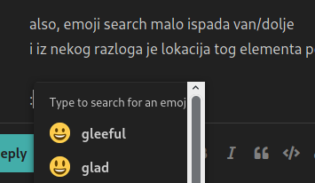

Amajli
sjetila sam se ovog i osla sam bzvz provjeravat opet, jos uvijek je tu samo na vlastitom profilu, this time on a completely new pair
stavila sam najbasic standard protection opcije, ugasila neki adblocker, ocistila cache, reloadala par puta
jedini novi info koji imam je da sam skuzila da randomly odabere neke threadove i na postovima koji su iz tih odabranih threadova 100% vremena nema ellipsis i reply oznakice, na postovima iz ostalih threadova uvijek ima. scrollala sam daleko daleko po profilu
nije krucijalno imat te opcije, but it’s a pretty weird bug
fun fun
🤷
also, emoji search malo ispada van/dolje ak je editor nizi

i iz nekog razloga je lokacija tog elementa povezana s top borderom reply editora